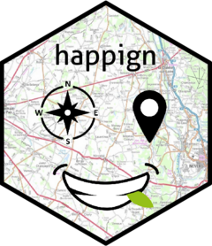

Changelog
Source:NEWS.md
happign 1.0.0
-
get_wms_rasterthe door now uses gdalwarp fromsf::gdal_utilsto avoid calculation and downloading of several tiles - update cog_2022 dataset to cog_2023
- remove
get_apicarto_commune()now supported byget_apicarto_cadastre() -
jsonliteis used instead ofgeojsonsfpackage
happign 0.1.9
CRAN release: 2023-04-12
- add
get_apicarto_viticole() - add
get_apicarto_codes_postaux() - add
get_apicarto_rpg() - rework of
get_apicarto_gpu() - depreciation of
get_apicarto_commune()now supported byget_apicarto_cadastre() - rework of
get_last_news() - remove dependency to
checkmate
happign 0.1.8
CRAN release: 2023-01-30
- Correction of get_raw_lidar()
- New vignette “completion_of_ign_data_road_example”
- Precomputation of cran vignette
- Apply DRY principle to option(“timeout”) handling
- Add “penmarch.shp” as internal data for test and example
- Better handling of filename saving for
get_wfs() - Adding support for spatial and ecql filter to
get_wfs() - Remove dependecy to magritrr pipe
%>%by|> - Add internal shape for testing
point,multipoint,line,multiline,poly,multipoly - add
get_wfs_attributes()function -
NULLis returned when no data found
happign 0.1.7
CRAN release: 2022-11-18
- Correct bug preventing
get_apicarto_communeto work with dep and insee code - Adding 1 hour of downloading to
get_wfs()for big shape - Remove connection to IGN news when library is load. Now
get_last_news()can be used to retrieve last news. - Adding
interactiveparameter toget_wfsandget_wms_rasterto allow quick use - Catch error from
get_raw_lidar - Change and complete vignette “happign for forester” on website
- Handling errors with tryCatch
-
get_apicarto_plu()is nowget_apicarto_gpu(): it can handle complex shape and access all ressources from APIcarto GPU - For consistency, it is now necessary to add drivers to filename in
get_wms_raster()likeget_wfs(). The automatic addition of resolution tofilenamehas been removed for simplicity.
happign 0.1.6
CRAN release: 2022-09-16
-
get_wms_raster()use gdal withsf::gdal_utils()for downloading andterra::vrt()for merging for quiet faster results.starspackage is not used anymore. -
get_wms_raster()supports the download of big raster of several gigabytes -
get_wms_raster()has newcrsargument - New function
get_raw_lidar()to download raw lidar data - New function
get_apicarto_commune()to download commune borders from apicarto - A new dataset containing names of communes and their associated insee code has been added
- Simplify
get_layers_metadata()to retrieve only title, name, and abstract - Remove dependency to
tidyr - new function
get_raw_lidar()to download raw lidar data from IGN - new function
get_apicarto_communeto download commune borders from the apicarto “cadastre” of IGN
happign 0.1.5
CRAN release: 2022-07-18
- remove
get_iso() - remove dependency to
httrbyhttr2 - add
get_wms_info()to find metadata of a layer - add
get_apicarto_plu()(Plan Local d’Urbanisme) - Rework of
get_wms_raster() - Adding new apikey “ocsge”
- Better testing
- Add all insee code as package data
data("code_insee") -
get_apicarto_*now support MultiPolygon -
get_wms_rasternow have 1h for downloading tile instead of 1min (for low connection)
happign 0.1.4
CRAN release: 2022-04-25
- Fix resolution for
get_wms_raster(). Depending on shape and resolution, multiple tile are downloaded and combine to get the right resolution. Also adding vignette Resolution for raster for further explanation - New start up message based on RSS flux of IGN website to warn user if there issues (slowdown, shutdown) or news resources *
get_wms_raster()now fix S2 geometry problems - adding
methodandmodeargument ofdownload.file()to have more freedom on the type of download withget_wms_raster() - Completion of the
happign_for_forestervignette - adding first
get_apicarto_*vectorized function for cadastre - adding
shp_to_geojson()function to avoidgeojsonsfpackage dependency
happign 0.1.3
CRAN release: 2022-03-01
- adding connection to isochrone and isodistance calculation of IGN with
get_iso() - new vignette happign for forester
- new vignette SCAN 25, SCAN 100 et SCAN OACI
happign 0.1.2
CRAN release: 2022-02-01
- adding a
filenameargument toget_wms_raster()andget_wfs()allowing to save data on disk. This new feature also overcomes the problem of connection to some WMS with GDAL #1 - Automatic weekly detection of http errors for all WFS and WMS APIs. Layers not readable by
get_wms_raster()#1 are also listed. - adding data license of IGN (etalab 2.0) to readme
happign 0.1.1
CRAN release: 2022-01-27
- add function to test internet connection and availability of IGN website when loading
happign) - test improvement
- readme and vignette improvement
happign 0.1.0
CRAN release: 2022-01-20
- add interface for WFS, and WMS raster service with
get_wfs()andget_wms_raster() - add
get_apikeys()andget_layers_metadata()to allow access to metadata from R